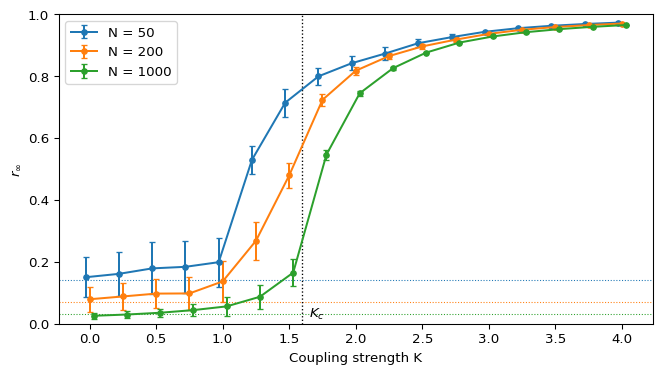

Kuramoto Lab: Finite-Size Effects
Module 2: Synchronization and Collective Behaviour
The formulas in Critical Coupling hold in the limit \(N \to \infty\). Your simulations use finite \(N\). This page covers the last two steps of the workflow: interpretation and limitations.
Two finite-\(N\) effects
- Noise floor. For incoherent phases, \(\mathbb{E}[r^2] = 1/N\) (The Order Parameter). Below \(K_c\) you measure \(r_\infty\) of order \(N^{-1/2}\), not zero.
- Sampling of frequencies. With \(N\) random draws, the empirical frequency distribution differs from \(g\). The transition point of one sample moves around \(K_c\), and the sharp corner of the \(N \to \infty\) curve is rounded off.
Simulations and physical arguments suggest that the fluctuations of \(r(t)\) are of order \(N^{-1/2}\), except very close to \(K_c\) where they may be amplified. As of 2000 there were no rigorous convergence results for finite \(N\) (Strogatz 2000, sec. 5.1). Both effects shrink as \(N\) grows. Figure 1 shows them with a normal frequency density, \(\sigma = 1\), so \(K_c \approx 1.60\).
Interpretation
- Below \(K_c\), each curve sits near its own floor \(N^{-1/2}\): about \(0.14\), \(0.07\) and \(0.03\).
- Near \(K_c\) the fluctuations of \(r(t)\) are largest. The transition is sharpest for the largest \(N\).
- The \(N = 50\) sample rises before \(K_c\). Its 50 frequencies have a sample standard deviation of about \(0.88\), smaller than \(\sigma = 1\), so this particular population is easier to synchronize. A different seed would move its curve.
- Well above \(K_c\), the three curves agree. Most oscillators are locked and sampling details matter little.
Limitations
- One sample of frequencies per \(N\) is not enough to separate the two finite-size effects. Average over several seeds if you need error bars on \(r_\infty\) itself, not just on \(r(t)\).
- Close to \(K_c\), \(r(t)\) settles slowly. A fixed time window can stop too early.
- The mean-field model has all-to-all coupling. Real oscillators often interact through a network, which changes the threshold. Module 5 returns to this with the swing equation for power grids.
Averaging over samples
This part is optional.
Exercise
Repeat Figure 1 with 10 seeds for each \(N\) and plot the mean of \(r_\infty\) over seeds. Then plot \(r_\infty\sqrt{N}\) against \(K\). Below \(K_c\) the curves for different \(N\) should collapse onto a single curve. Where does the collapse fail?
Solution
At \(K = 0\) all three curves start at \(r_\infty\sqrt{N} \approx 0.89\), the mean of \(\sqrt{N}\,r\) for independent uniform phases (\(\sqrt{\pi}/2\)). Up to \(K \approx 1\) they stay together and rise slowly, to about \(1.6\): coupling below threshold enhances the fluctuations but keeps them of order \(N^{-1/2}\). Close to \(K_c\) the curves separate: \(r_\infty\) no longer scales like \(N^{-1/2}\), and the largest population departs first. The run takes about 15 seconds.
import numpy as np
import matplotlib.pyplot as plt
from amlab.synchronization.kuramoto_sweep import critical_coupling, order_parameter_sweep
sigma = 1.0
kc = critical_coupling(1 / (np.sqrt(2 * np.pi) * sigma))
k_values = np.linspace(0, 4, 17)
fig, axs = plt.subplots(1, 2, figsize=(9, 4))
for n in [50, 200, 1000]:
r_seeds = []
for seed in range(10):
rng = np.random.default_rng(seed)
omega = rng.normal(0, sigma, n)
theta0 = rng.uniform(0, 2 * np.pi, n)
r_mean, _ = order_parameter_sweep(k_values, omega, theta0, t_end=80, dt=0.1, t_average=40)
r_seeds.append(r_mean)
r_avg = np.mean(r_seeds, axis=0)
axs[0].plot(k_values, r_avg, "o-", label=f"N = {n}")
axs[1].plot(k_values, r_avg * np.sqrt(n), "o-", label=f"N = {n}")
for ax in axs:
ax.axvline(kc, color="black", linestyle=":")
ax.set_xlabel("Coupling strength K")
ax.legend()
axs[0].set_ylabel(r"mean of $r_\infty$ over seeds")
axs[1].set_ylabel(r"$r_\infty \sqrt{N}$")
axs[1].set_xlim(0, kc)
axs[1].set_ylim(0, 5)
plt.tight_layout()
plt.show()Exit question
Exercise
You run a simulation with \(N = 400\) and \(K = 1.0\) (normal frequencies, \(\sigma = 1\)) and find \(r_\infty \approx 0.05\). A classmate says this shows weak partial synchronization. Is that right?
Solution
No. \(K = 1.0\) is below \(K_c \approx 1.60\), so the \(N \to \infty\) prediction is \(r_\infty = 0\). The measured value is consistent with the incoherent noise floor \(N^{-1/2} = 0.05\). To claim partial synchrony you would need \(r_\infty\) well above \(N^{-1/2}\) and a value that does not decrease as you increase \(N\).
The graded Kuramoto Assignment is released in this session.
References
Strogatz, Steven H. 2000. “From Kuramoto to Crawford: Exploring the Onset of Synchronization in Populations of Coupled Oscillators.” Physica D: Nonlinear Phenomena 143: 1–20.